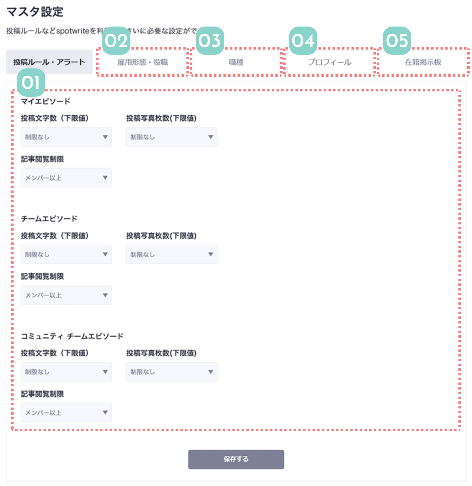

マスタ設定は、Spotwriteのさまざまな設定を企業独自にカスタマイズできる画面です。
投稿に関するルールや独自の役職や職種、プロフィールの設問など、デフォルトでも設定がありますが自社に合わせてカスタマイズすることで、よりSpotwriteが使いやすくなります。


01
記事カテゴリごとにルールを設定できます
記事カテゴリごとに、最低文字数と写真投稿数、閲覧できるユーザーの範囲を設定できます。
会社の運営方針によって、手の込んだ記事を投稿してほしい場合は文字数や写真数を設定するのがおすすめです。
記事閲覧制限は、ユーザーの利用権限によってデフォルトで記事を見られる範囲を設定できます。
例えば、マイエピソードは準メンバー権限以上しか見られなくする、チームエピソードはメンバー権限以上にするなど、細かく使い分けができます。